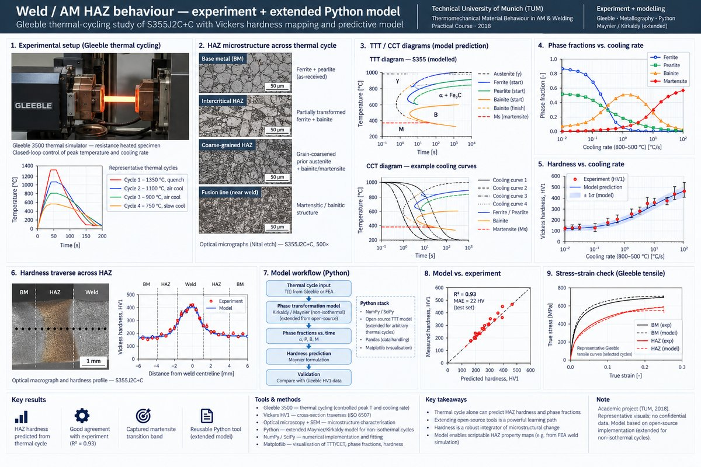
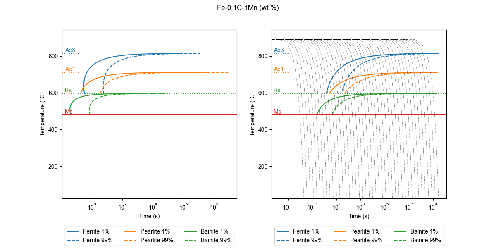
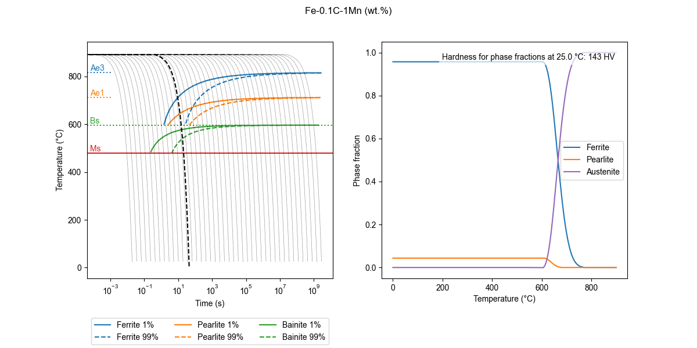
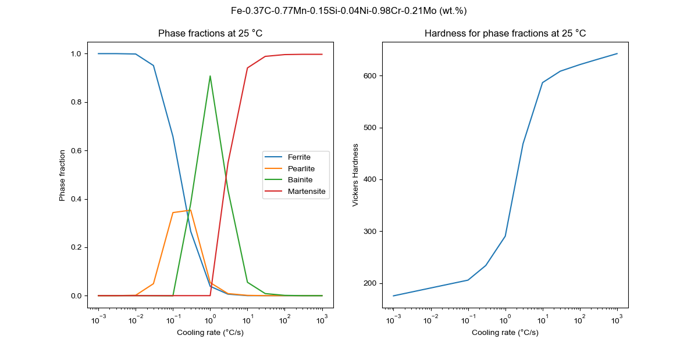
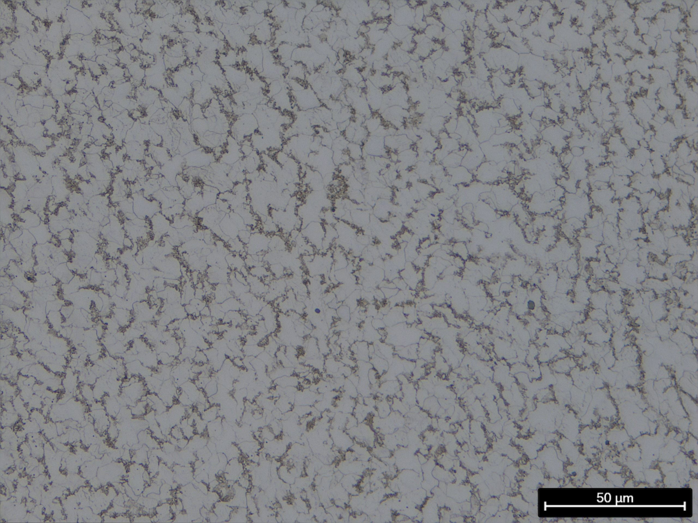
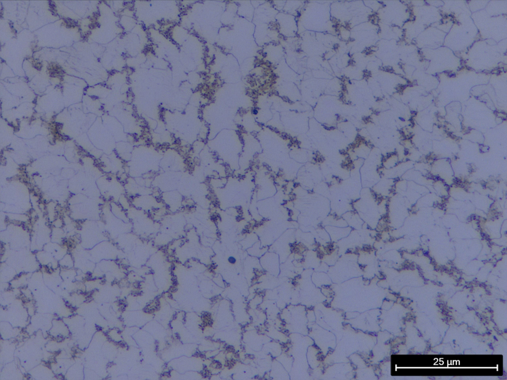

Case study · Thermomechanical materials behaviour · TUM
Weld / AM HAZ behaviour — experiment + extended Python model.
Gleeble thermal-cycling study of S355J2C+C heat-affected zones with Vickers hardness mapping, and an extended open-source Python model that predicts hardness and TTT-curve behaviour directly from the imposed thermal cycle.

Problem
The heat-affected zone (HAZ) next to a weld or along an additively-manufactured deposit line is not a single microstructure — it's a gradient driven by peak temperature and cooling rate that change with distance from the heat source. In S355J2C+C structural steel, that gradient runs from untransformed base metal, through partially-transformed intercritical zones, to fully austenitised and then quenched grain-coarsened zones where the final microstructure can be anything from ferrite/pearlite to bainite to fully martensitic depending on the cooling trajectory. The practical course set out to measure that gradient. The modelling extension I built on top of it set out to predict it from the thermal cycle alone.
Approach
- Gleeble thermal cycling — a range of weld/AM-representative cycles programmed on Gleeble specimens, spanning peak temperatures from sub-critical through full austenitisation and cooling rates from slow-air to quench.
- Metallography + SEM — cross-section preparation, Nital etch, and optical/SEM imaging to classify microstructure zone-by-zone: ferrite/pearlite, bainite, martensite, plus grain-coarsened austenite-origin structures.
- Vickers microhardness mapping — HV1 traverses across each cycled specimen; the hardness trace is the scalar that integrates the microstructural change.
- Open-source model extension — started from a published open-source Python implementation of Maynier-family hardness predictions and Kirkaldy-style TTT-curve calculations; extended it to accept arbitrary thermal cycles (not just isothermal holds) and fitted it against this experiment's measurements so it could predict hardness and phase fractions for unseen cycles.
- Stress–strain check — representative Gleeble tensile pulls at chosen points in the cycle to anchor the model's constitutive side and to show that the hardness prediction implied a sensible flow-stress story.





Tools & setup
- Gleeble thermal simulator — resistance-heated specimens with closed-loop peak-temperature and cooling-rate control.
- Vickers HV1 microhardness — cross-section traverses, indent spacing per ISO 6507.
- Optical microscopy + SEM — Nital-etched cross sections, grain-size and constituent identification.
- Python — forked open-source Maynier/Kirkaldy-style implementation, extended to accept non-isothermal cycles, and re-fit using the course measurements. Predicts hardness, phase fractions, and TTT-curve shifts for arbitrary compositions.
Outcomes
- Experimental HAZ map — microstructure and hardness gradients as a function of peak temperature and cooling rate, anchored against S355J2C+C reference data.
- Extended predictive model — a Python tool that takes a thermal cycle and returns predicted phase fractions, hardness, and a recomputed TTT diagram. The extension was beyond the course scope; the starting point was an open-source repository that only did isothermal holds.
- Reasonable agreement — the extended model reproduced the measured hardness trend across cooling rates and flagged the martensite-transition band at approximately the right cooling-rate threshold.
The point of the model was not to replace a CCT chart — it was to turn the HAZ gradient into something scriptable. With a thermal-cycle input from an FEA weld simulation, the extension can predict a through-thickness hardness map without doing another experiment, which is the correct place to use a model of this fidelity.
Validation
Predicted HV values were cross-checked against the Vickers traverse data and against published Maynier-formulation hardness predictions for S355-family steels. The predicted martensite-start cooling rate was cross-checked against classical CCT diagrams in the steels literature. Where the model under-predicted hardness (slow-cool bainitic zone), the discrepancy was traced to the Kirkaldy nose-shape assumption for this specific composition rather than to measurement error — reported honestly as a known limitation.
Lessons learned
- An open-source model is a starting point, not an answer. The course deliverable could have stopped at the measurements; wiring the measurements into a model turned a descriptive study into a predictive one.
- Extending a published tool is a better learning move than writing a new one. Reading and modifying working code for non-isothermal cycles taught more about the Kirkaldy/Scheil framework than implementing it from scratch would have.
- Hardness is a surprisingly faithful integrator of thermal history — a single scalar that carries enough information to validate a multi-phase predictor in most structural-steel regimes.
Artifacts
- TUM practical course paper — "Thermomechanical Material Behaviour in Additive Manufacturing & Welding" (final draft).
- Extended Python model — fork of an open-source TTT/hardness predictor (available on request).